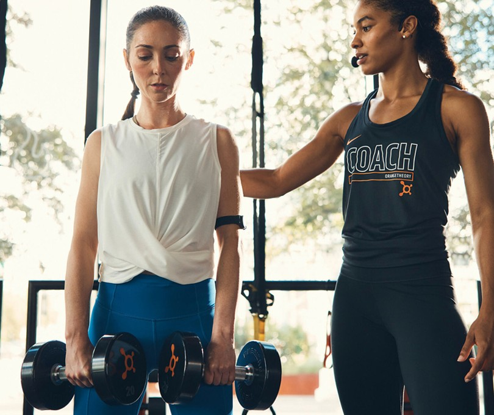
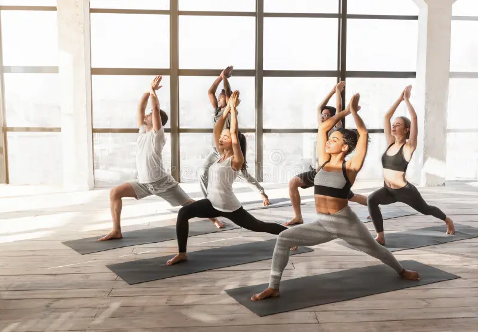

Health Tips
The following are fitness tips for the 3 segments of people.
Which one do you lie in?
No Workout Folks (Beginners), Yoga Enthusiasts, Gym Freaks?
When it comes to fitness, everyone’s journey looks a little different. Whether you're just getting started, deeply committed to the art of yoga, or a hardcore gym enthusiast, your fitness needs and tips can vary greatly. To help you stay on track and achieve your goals, we’ve broken down some essential fitness advice tailored for three groups: No Workout Folks (Beginners), Yoga Enthusiasts, and Gym Freaks. Which one do you belong to
1. Beginners :

1. Exercise Snacking: Micro Workouts for Big Gains
If you are one of those people who cannot manage to fit conventional workouts into your schedule, exercise snacking might be a lifesaver. It is all about performing very brief periods of physical activity, such as 20 seconds of squats or climbing stairs, a few times throughout the day. Studies indicate that these mini-workouts can dramatically enhance cardiovascular fitness and endurance without requiring a gym or equipment. The concept is to incorporate movement into your everyday routine, not as a distinct, daunting experience. With time, these small investments pay off, enhancing your energy and strength levels. And it feels doable, particularly if you're beginning from zero physical activity.
2. Non-Sleep Deep Rest (NSDR) for Recovery
Most novices are tired even before engaging in a physical workout due to latent stress and impaired recovery. Non-Sleep Deep Rest (NSDR), similar to guided Yoga Nidra, allows for the body to be relaxed in a state that is close to sleep without being asleep. The methods refresh the nervous system, reduce cortisol (the stress hormone), and increase muscle recovery and mental sharpness. Practicing NSDR for as little as 10–20 minutes a day can make you feel more refreshed, relaxed, and energized. It's a potent means of establishing a solid mind-body interface before leaping into regular physical exercise.
3. Cold Exposure (Timed Correctly)
Cold exposure, such as rapid cold showers or cold baths, can stimulate your metabolism, increase alertness, and enhance resilience. Timing is everything, though. If you apply cold therapy immediately after hard training, it will dampen the healthy inflammation needed for muscle adaptation and growth. That is why beginners should apply cold exposure on rest days or at least four to six hours post-workout. Cold exposure as an independent practice teaches discipline and makes your body's own recovery mechanisms more efficient, which will make future physical stress easier to deal with.
4. Box Breathing for Focus and Stress Relief
Box breathing is an easy yet very efficient breathing exercise that can prepare beginners mentally to take up a physically active lifestyle. It is a breathing technique in which one inhales for 4 seconds, holds the breath for 4 seconds, exhales for 4 seconds, and holds for another 4 seconds. Regular practice of this technique lowers anxiety, relaxes the mind, and stabilizes the nervous system. It's particularly helpful for those who are overwhelmed or intimidated by the prospect of beginning physical exercise. A relaxed, concentrated mind provides the basis for establishing sustainable habits without stress or pressure.
5. Walking in Zone 2 for Metabolic Health
One of the simplest ways to start enhancing your fitness without high impact or risk is walking at Zone 2 intensity. This is keeping a level where you can converse but experience a slight strain. Zone 2 training makes the mitochondria stronger, better metabolizes fat, and develops aerobic base — all essential for health and longevity. Daily walking at this level of effort for 30 minutes is sufficient to improve heart health considerably within weeks. It's easy to do, needs no equipment, and is one of the finest beginner activities for inactive people.
6. Sleep Banking Before Busy Days
If you expect a physically demanding day — a hike, a long travel day, or even beginning a new exercise routine — "sleep banking" can get your body ready. It means deliberately sleeping extra (an extra 1–2 hours a night) in the days leading up to the activity. Scientific studies demonstrate this can improve physical performance, diminish reaction time lags, and improve mood. Newcomers tend to not realize how much sleep is critical to physical readiness. Prioritizing sleep as an active weapon ensures your body has the resources it requires in order to thrive under new stresses.
7. Optimized Protein Timing for Beginners
Even if you are not currently strength training, consuming sufficient high-quality protein is necessary to preserve your muscle mass and aid recovery from moderate physical exertion. Target 20–30 grams of protein at each meal, from lean meats, eggs, dairy products, or plant-based sources such as lentils and tofu. Proper protein timing allows your body the building blocks of amino acids to fix microscopic tears from daily activity, making you less sore and more energized. It also helps metabolic health, making it simpler to manage weight as you move more.
8. Vitamin D Optimization for Overall Health
Vitamin D's function goes well beyond bone density — it is vital to proper muscle function, mood regulation, immune balance, and general wellness. Many starters who don't exercise because they feel too exhausted or demotivated tend to be lacking vitamin D. Some small things, such as more sunlight, increasing fatty fish consumption and eating more eggs, or using supplements, can significantly make your energy boost.". Maintaining vitamin D at its best sets up an internal environment in which initiating physical activity is easier and more sustainable.
9. HRV Tracking to Understand Your Stress
Heart Rate Variability (HRV) is a powerful tool for beginners to learn about how their body is reacting to daily stress and recovery. A high HRV typically means your nervous system is in good balance and prepared to meet physical demands, whereas a low HRV suggests you may need more rest. Without organized exercise, measuring HRV with a smartwatch or fitness app provides you with information on how lifestyle issues — sleep, nutrition, hydration — are influencing your readiness. This assists you in making better decisions regarding when to push and when to take it easy.
10. Intra-Day Movement (Not Just Workouts)
For those who are intimidated by structured exercise, intra-day movement is a perfect place to start. That's finding ways to move more naturally throughout the day — standing during work, stretching while watching TV, taking a walk while you're on the phone, or even just a few squats an hour. These micro-movements contribute to keeping the blood flowing, healthy joints, and avoiding the ill effects of prolonged sitting. Over time, they establish a baseline of physical activity that facilitates a smooth entry into formal workouts and makes it less daunting.
2. Yoga Enthusiasts

1. Progressive Overload with Bodyweight Exercises
Since your body is already used to movement, flexibility, and holding poses if you practice yoga, you can add the idea of progressive overload through bodyweight exercises for increased strength and fitness. This involves increasing the difficulty gradually over time, like doing a plank longer, attempting advanced yoga poses, or introducing slow pushups and squats. Progressive overload strengthens your muscles so you keep gaining endurance, stability, and resilience and don't get stuck in a plateau. It gets your yoga practice stronger and can even make your form, balance, and mind-body awareness better.
2. Zone 2 Cardio to Boost Endurance
Yoga students tend to have great flexibility and body control but can have poor cardiovascular endurance if they don't specifically train it. Zone 2 cardio, which maintains a moderately raised heart rate while still permitting conversation, makes your heart and lungs stronger, yet in an efficient manner. Brisk walking, cycling, or light jogging in Zone 2 intensity for 30–45 minutes can complement your yoga practice. It improves the delivery of oxygen to your muscles, enabling you to sustain difficult poses longer and recover more quickly. Daily cardio also enhances overall vitality and emotional well-being, complementing yoga's holistic effects nicely.
3. Eccentric Training for Joint and Tendon Strength
Eccentric training consists of prioritizing the "lowering" part of movements, such as gradually lowering from plank to floor or slowly going down into a squat. For yoga students, eccentric control prioritization develops superior joint, tendon, and ligament strength, decreasing injury risk. It also becomes easier, more controlled transitions from one pose to another. Such training activates the production of collagen, strengthening the connective tissues yoga relies on so heavily. Incorporating eccentric exercises a couple of times weekly ensures a more resilient, injury-resistant body better able to move into deeper, more challenging yoga practices without the risk of harm.
4. Cold Exposure for Muscle Recovery
Although yoga is a milder practice than high-intensity sports, it may also result in muscular microtears following dynamic or power yoga classes. Incorporating cold exposure, such as cold showers or ice packs, following particularly strenuous classes can aid in reducing inflammation, speeding up muscle recovery, and alleviating soreness. But as with all training, it's best to time cold exposure strategically — ideally a few hours after practice, so the adaptive benefits of the yoga session aren't diminished. Periodic cold therapy can also enhance mental resilience and toughness, complementing yoga's focus on learning to tolerate discomfort.
5. Nasal Breathing Training
Yoga will always highlight control of the breath (pranayama), but you can take your fitness a step higher by practicing solitary nasal breathing when exercising and going about your day. Nasal breathing increases the production of nitric oxide, maximizes oxygen utilization, and activates parasympathetic (relaxation) nervous system response. Nasal breathing trains your lungs and diaphragm so that physical exertion feels smoother and less strenuous. By emphasizing nasal breathing throughout both yoga and cardio training, you condition your body to manage stress more effectively, enhance your meditation techniques, and lay the groundwork for more efficient athletic performance in the long run.
6. Red Light Therapy for Recovery and Skin Health
For frequent yoga students looking to maximize recovery, red light therapy is an intriguing, science-supported tool. Red and near-infrared light have a deep penetration in the skin and muscle, exciting mitochondrial activity and promoting tissue repair. Consistent exposure enhances muscle recovery, diminishes inflammation, and even leads to healthier, glowing skin — something that also represents inner-outer balance yoga aspires toward. Red light therapy is safe, non-surgical, and simple to add to your practice at home. It works well with the yoga philosophy of healing the body naturally and with ease.
7. Sleep Regularity for Hormonal Balance
Yoga emphasizes balance in all aspects of life, and maintaining consistent sleep patterns is key to achieving it. Going to bed and waking up at the same times every day stabilizes your circadian rhythm, promoting hormonal balance. This helps regulate cortisol (stress hormone) and boosts melatonin (sleep hormone) production, ensuring deeper, more restorative sleep. Good sleep improves physical recovery, emotional balance, and mental performance, maximizing the benefits of your yoga practice. Sleep regularity as a priority guarantees that your physical, mental, and spiritual development continues to grow without unwarranted interruptions.
8. Inversion Practice for Circulation
Inversions such as headstands, handstands, or even just lying with your legs up against the wall are great tools to improve circulation and lymphatic flow. Daily inversion practice serves to bring oxygen-rich blood to the brain, increase metabolism, and facilitate detoxification via the lymphatic system. It also develops core and shoulder strength as well as balance and proprioception (body position awareness). For yogis, overcoming inversions not only enhances the physical practice but also provides the mind with deep rewards — cultivating concentration, courage, and a playful and adventurous attitude.
9. HRV Awareness for Recovery Days
As you advance through your yoga path, it becomes essential to listen to your body's subtle cues. Monitoring your Heart Rate Variability (HRV) enables you to gauge whether your body is prepared for an intense workout or requires a more gentle session. High HRV signals that your body is resilient and prepared, whereas low HRV dictates that you incorporate recovery activities such as restorative yoga or meditation. Using HRV values to inform your intensity levels keeps you from overtraining, spares injuries, and respects the yoga philosophy of ahimsa (non-violence) towards yourself, allowing for a sustainable practice.
10. Micro-Meditations During the Day
Yoga doesn't remain on the mat — its essence can permeate your day. Engaging in micro-meditations like 1–3 minute breaks in breathing during work, before eating, or even between tasks enhances awareness and emotional centering. These mini-breaks reset your nervous system, boost focus, and strengthen your ability to stay centered amidst chaos. Over time, micro-meditations expand your "meditative muscle," making it easier to slip into deeper states of awareness during formal yoga and meditation sessions. It’s a beautiful way to truly live your yoga off the mat.
3. Gym Freaks

1. Optimized Creatine Timing
For athletes and fitness buffs, creatine is among the best-studied and best-efficacy supplements to enhance strength, power, and recovery. Although daily use of creatine is paramount, taking it after your exercise, particularly with carbs and protein, can facilitate its absorption and ensure maximum muscle retention. Creatine fills the muscles with phosphocreatine, enhancing ATP production — the primary energy currency of the body during high-intensity exertions. It also aids cognitive function, so it is useful even outside the gym. Regular creatine use combined with proper timing means improved gains in performance and quicker recovery.
2. Periodized Training Cycles
To optimize performance while reducing the risk of injury, athletes must organize their training into periodization — scheduled cycles of different intensity, volume, and emphasis. Rather than training at peak effort all the time, periodization involves periods such as strength development, hypertrophy (growth of muscle tissue), endurance, and deload (rest) weeks. The approach enables the body to gradually adapt without getting stuck in plateaus and burnout. Periodization honors natural recovery and growth cycles, preventing long-term deterioration. Intelligent periodization produces a wiser athlete who can peak for competition or personal objectives without physically breaking down.
3. Zone 5 Sprints for VO2 Max
Sprinting at high intensities that force you into Zone 5 (90–100% of your maximum heart rate) is critical to building VO2 max — the maximum capacity of your body to take in oxygen. Sprint interval training, either on a bike, track, or rowing machine, increases your heart and lung capacity by leaps and bounds, raising your endurance ceiling. This training conditions your body to do better under conditions of high stress, so that every other kind of workout (even strength training) will be easier. For serious gym rats, incorporating brief periods of Zone 5 work on a weekly basis can unleash new levels of fitness and metabolic efficiency.
4. Blood Flow Restriction (BFR) Training for Hypertrophy
Blood Flow Restriction (BFR) training uses specialized bands or wraps to partially restrict blood flow to muscles during light weightlifting. This builds a strong anabolic climate, activating hypertrophy (muscle development) at far lower loads than conventional lifting. It's particularly beneficial for recovery phases, joint rehabilitation, or overcoming plateaus in muscle growth. BFR enables you to get equivalent muscle-building results using lighter weights, minimizing joint stress while continuing to maximize gains. It's a tactical resource for athletes looking to drive hypertrophy without subjecting their body to heavy lifts on a consistent basis.
5. Mobility Drills for Longevity
Often neglected by intense lifters, mobility exercises are essential for joint health, muscle flexibility, and general athletic longevity. Consistent mobility drills — such as hip openers, thoracic spine rotations, and ankle mobility drills — avoid stiffness and minimize injury potential. They keep your muscles and joints working freely and with ease, helping with enhanced lifting mechanics and athletic performance. Spending only 10–15 minutes every day on mobility work can dramatically improve range of motion, decrease pain, and increase strength production. Mobility is not a warm-up, it's an insurance policy for your future fitness.
6. Strategic De-Load Weeks
Training hard all the time without strategized rest periods usually results in overtraining, fatigue, and injury. Strategic de-load weeks — where you deliberately cut your training volume and intensity — let your body recover, repair, and supercompensate, returning even stronger. They're essential for long-term progress, even if psychologically you're prepared to push harder. A de-load isn't "taking it easy" — it's a proactive move in high-level training strategy. Competitors who honor de-loads tend to experience enhanced strength gains, improved mood, and decreased chronic injury risk.
7. Sleep Extension for Peak Performance
Though 7–8 hours of sleep is sufficient for overall health, hard-training athletes typically require more — more like 9–10 hours. Sleep extension, or deliberately adding on to your sleep time at night, facilitates greater muscle recovery, mental performance, reaction time, and emotional well-being. Research indicates that sleep is a priority for athletes who experience quantifiable gains in sprint performance, lifting capacity, and endurance. It's during deep sleep that your body secretes growth hormone and repairs tissues most efficiently. So, sleep is not a "nice-to-have"; it's an essential training tool.
8. Heat Acclimation Training
Heat training — safely and progressively — can improve cardiovascular efficiency, plasma volume, and sweating response, providing a competitive edge for endurance and toughness. Acclimation to heat raises your body's cooling capacity and resistance to stress and has a positive effect on performance in cooler environments as well. But it needs to be done with care, beginning with brief exposures and adequate hydration. For athletes, intentional exposure to heat can serve as a type of natural doping, allowing you to work harder for longer when it counts. It's an unseen edge that distinguishes high-level performers from the rest.
9. Intra-Workout Nutrition for Long Sessions
If your workouts last longer than 90 minutes or are extremely demanding, eating small doses of carbohydrates (such as a banana, sports drink, or electrolyte gel) during exercise can maintain energy and postpone fatigue. Intra-workout nutrition restores glycogen stores and keeps blood glucose levels constant to allow you to train at high quality throughout the workout. It also reduces post-workout crashes and enables recovery to take place more quickly. For serious gym enthusiasts, optimizing intra-workout nutrition is a minor adjustment that can result in dramatic gains in performance and muscle-building benefits.
10. HRV-Based Training Adjustments
Top-level athletes are now employing Heart Rate Variability (HRV) data to customize day-to-day training intensity. Rather than mindlessly sticking to a static program, they modify according to physiological preparedness. A high HRV indicates a go-ahead for intense or heavy training, while low HRV signals that the body is stressed and could do with lighter activity or rest. Training with HRV minimizes the risk of injury, maximizes gains, and honors the internal cues of the body. It's training smarter, not merely harder — accessing better outcomes over time.
Discover More